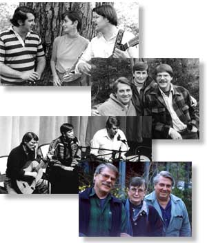

Bok, Muir and Trickett
 Ann Muir and Gordon Bok first met in 1961 when both were fulfilling singing engagements in Vermont. A year later, Ann met Ed Trickett at a musical gathering in Hartford, Connecticut, where Ed was a student. Convinced that Gordon and Ed ought to know one another, Ann arranged for them to meet "in absentia" through an exchange of tapes. Gordon was working as a sailor along the northeast coast; Ed was heading west to continue his studies, and Ann remained in Connecticut. For seven years they corresponded, swapping songs by tape. It was not until Ed returned to Connecticut in 1969 that the trio finally got together to make live music.
Over the years of their friendships, the three have explored their remarkable affinity as frequently as time and circumstances permitted. In the spring of 1975, they arranged their first series of joint concerts. Since then the trio has performed together regularly and has now recorded nine albums.
Gordon Bok, Ann Mayo Muir and Ed Trickett are not a "trio" in the conventional sense. In sharing the concert stage, each retains his or her musical identity, often performing as many solo songs as those performed together. The texture of the concerts is extremely varied and reflects their diverse tastes and experiences of music. You may hear sea songs, mountain songs and river songs, tales of far-off lands, dances, stories, cantefables and an array of instrumental combinations. You will certainly hear the unforgettable harmonies of Bok, Muir and Trickett and experience the sense of wholeness that arises from their mutual affection and respect for each other and for the music. They toured together for 27 years. They still get together when possible, to visit and make music privately.
For more information about Ann, see her website.
Ed does not currently have a musician website.
Discography:
- Turning Toward the Morning (1975)
- The Ways of Man (1978)
- A Water Over Stone (1980)
- All Shall Be Well Again (1983)
- Fashioned in the Clay (1985)
- Minneapolis Concert (1987)
- And So Will We Yet (1990)
- The First Fifteen Years, Vol I. (1992) (Collection)
- The First Fifteen Years, Vol II (1992) (Collection)
- Language of the Heart (1994) Out of Print
- Harbors of Home (1998) Out of Print
All of the above recordings are available at Timberhead Music. Click on any title to see information about individual CDs.